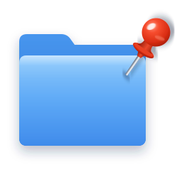

Finder has favourites, but no pins. PinFolder adds them — a menu-bar quick-open list, a pin that floats a file to the top of its own folder, and a sidebar toggle. All from one right-click.
$ brew install sai-na/tap/pinfolder
$ pinfolder-setup
Every pin lives in the menu your hands already know: right-click → Quick Actions. Watch each one do its thing:
A 📌 lives in the macOS menu bar and lists your pins from anywhere — no Finder window needed. Folders open in Finder, files open in their own app. Underneath it's a plain text file you can edit by hand.
// right-click → Quick Actions → 📌 Pin — and it's in the 📌 menu, top-right of your screen
Creates a tiny 📌 name shortcut that out-sorts every other name — dotfiles and [brackets] included. Your original file is never renamed, never moved. Right-click again to unpin.
// the shortcut lands above .config and [archive] 2025 — whitespace out-sorts punctuation
Toggles the item in Favourites — same as dragging it there, without the dragging. It shows up in every Finder window and every open/save dialog. Right-click again to remove it.
// GitHub slides into Favourites — in every window and every open/save dialog
Your pins live in ~/.pinned-folders — one path per line. Edit it by hand, sync it in dotfiles, grep it. Pin-on-top shortcuts are ordinary symlinks. Deleted items disappear from the menu on their own, and make uninstall leaves nothing behind but your own files.
Everything compiles on your Mac in seconds — a ~100-line Swift menu-bar app and a small sidebar helper — so there's no unsigned binary for macOS to quarantine.
If the Quick Actions don't appear at first, enable them once in System Settings → Extensions → Finder. Honest caveats: Pin on Top only wins under Name ↑ sorting with groups off, and pinned items appear twice (shortcut + original) — the price of never renaming your files.
Changed your mind? pinfolder-setup uninstall && brew uninstall pinfolder (or make uninstall from a clone) removes everything except your own pins file and shortcuts.